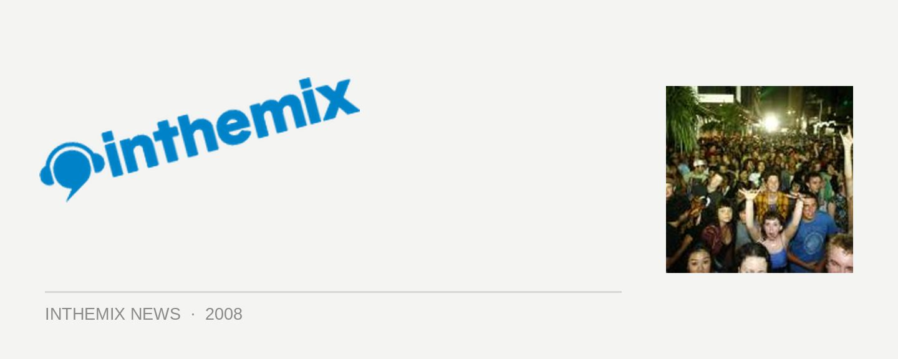

Festival First Night photos online
Were you one of the many thousands upon thousands of people who descended on the CBD on Saturday night to party at any of the free Festival First Night events around the city? Check out the photos that are online HERE, or join the forum discussions HERE.
If you did make your way into the city on Saturday, then you would have experienced the epic scale on which everything took place: not least, the massive street parties hosted by Fuzzy across two different stages in Martin Place and Phillip Street that featured performances from Spank Rock, Chromeo, Plump DJs, Ajax, Lost Valentinos and more. Thousands upon thousands of people were going off to the free sounds but there was a heap of other stuff going on too, including an eclectic selection of sounds in Hyde Park, Brian Wilson playing to an estimated crowd of 100,000 people in the Domain as well as the Uber Lingua providing both the audio and visual entertainment in Angel Place.
Last saturday night was only the beginning: there’s a heap of other excellent entertainment coming this month as part of the Sydney Festival, check out our Full Coverage page here for info, news, interviews and more.